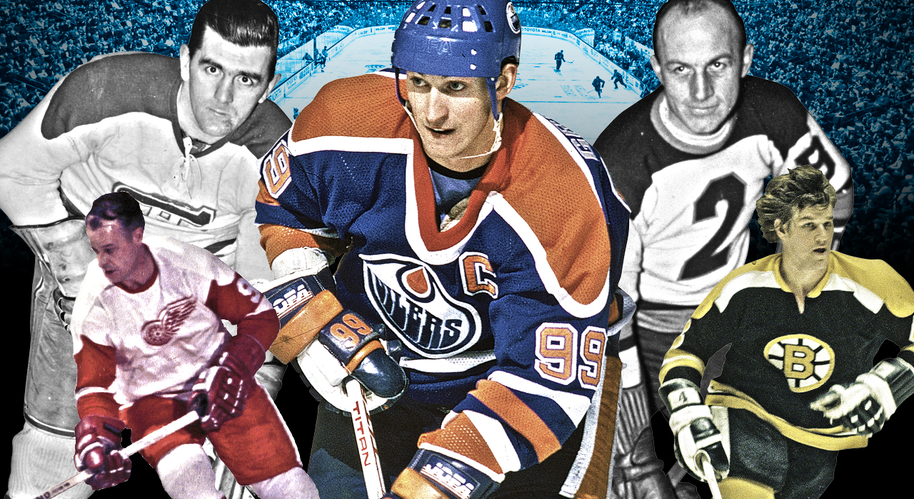

Today's Superstars
Many canadiens, russians and some swedes
Nowadays World's Best
- 10.John Tavares is not the fastest guy in the game, but he more thanbr makes up for it with his great stickhandling, passing and shooting.
- 9.Anze Kopitar doesn’t get a ton of attention, but he’s a force on offence and defence.
- 8.As a defenceman, Drew Doughty can do it all, and saves his best hockey for the playoffs.
- 7.Evgeni Malkin’s combination of size and skill is almost unfair. When he’s on, he is basically unstoppable.
- 6.Ryan Getzlaf is skilled and a little mean, which is a great combination in hockey.
- 5.Henrik Lundqvist is consistently at the top of everyone’s list for best goalie. That’s why they call him “The King.”
- 4.Nobody in the NHL fills the net quite like Alex Ovechkin.
- 3.Steven Stamkos skates like the wind and shoots like a cannon.
- 2.They call Jonathan Toews “Captain Serious,” and with two Stanley Cups and two Olympic gold medals on his resumé, he doesn’t fool around when it comes to winning.
- 1.There are plenty of challengers to Sidney Crosby, but “Sid the Kid” remains hockey’s golden boy.
All time Greatest
- 10.Eddie Shore was a mean defenceman and one of the league’s first big stars.
- 9.Bobby Hull terrorized goalies with his deadly slapshot.
- 8.Jean Béliveau played at a high level, with the dignified presence of a great statesman.
- 7.Doug Harvey was a smooth skater who did it all on defence.
- 6.Many call Mark Messier the greatest leader in hockey history.
- 5.Maurice “The Rocket” Richard was the first player to score 50 goals in a season and remains a Francophone icon.
- 4.Mario Lemieux dazzled with quite possibly the most natural ability of anyone who ever played.
- 3.Gordie Howe could score, he could hit and he kept doing it all into his 50s; that’s why they call him “Mr. Hockey.”
- 2.Bobby Orr, “Number 4,” changed the way the game is played with his attacking style from his defence position. be
- 1.Wayne Gretzky scored more goals and points than anybody in NHL history. In fact, “The Great One” has more assists than anyone else has points
What do you think ? Who is the best player today ?
NHL Greatest Teams
The Stanley Cup is the championship trophy awarded annually to the National Hockey League playoff winner after the conclusion of the Stanley Cup Final.
The Montreal Canadiens have won the Stanley Cup 23 times since the league was formed, 10 more than the second-place Toronto Maple Leafs.
From 1951-60, Montreal made the Cup final every season, winning five times in a row from ’56-60. Between 1965 and 1979, the Canadiens won 10 more times. Since then, they’ve won twice more: in 1986 and ’93.
These days, Stanley Cup dynasties have become much harder to come by. The New York Islanders won four consecutive Cups: ’79, ’80, ’81 and ’82. The Edmonton Oilers won five Cups between 1983 and 1990, but only one team—the Detroit Red Wings in ’97 and ’98—has won back-to-back Cups since.
Today, the only teams that could be considered anything close to dynasties are the Los Angeles Kings and Chicago Blackhawks. The Kings have won two Cups in the past three seasons, while Chicago won in 2010 and ’13.